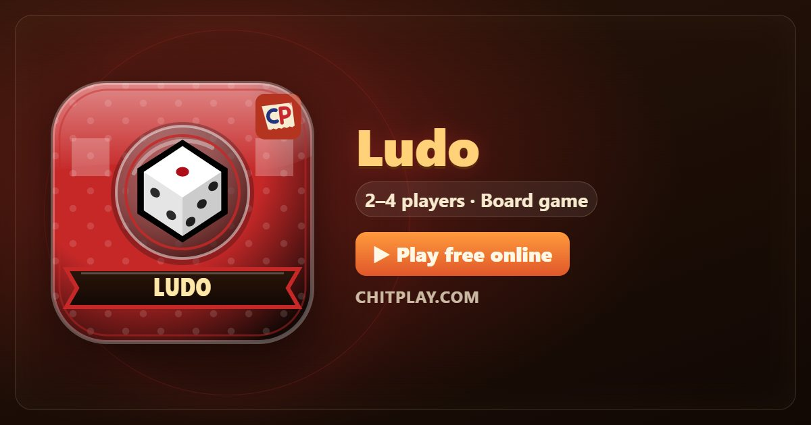

Ludo: play free online and learn the rules
- 👥 2–4 players
- ⏱ 20–40 minutes
- 👤 guest play
- 🌍 online opponents
- 🤖 computer players
- 📶 friends nearby
- 🆓 free, no sign-up
Ludo is a race for two to four players, descended from the old Indian game Pachisi. Each player has four tokens waiting in a coloured yard, and the first to bring all four round the board and up their own home column wins. Luck decides the die, but which token you move decides the game.

Ways to play Ludo
- 👤 Guest play Start straight away against computer players, no account and no sign-up. Choose 2 to 4 players.
- 🌍 Play online Get matched with real players from around the world. If nobody is free within a few seconds, computer players take the empty seats so you are never left waiting.
- 📶 Friends nearby Open a room, and friends join from their own phones with a 6-digit code or by scanning a QR code. Works on the same Wi-Fi or across the internet.
- 📱 One phone Pass one phone around the table; secrets stay hidden until it is your turn.
- 👀 Watch Let the computer players show you how the game goes before you jump in.
How to play
- Tap Roll on your turn. You need a six to bring a token out of the yard and onto your start square.
- Tap a glowing token, or its button, to move it forward by the number rolled. If only one move is possible the game makes it for you, and if no token can move your turn ends.
- Land on a rival token and it goes back to its yard. Start squares and star squares are safe: nobody can be captured there.
- After going round the board, a token turns up your home column. Reaching home needs the exact number.
- A six, a capture and a token reaching home each give you another roll. Three sixes in a row lose your turn.
Scoring
Choose the mode before you play. In Normal mode there are no points: the result table shows the tokens each player brought home. In Score mode each square moved scores 1, a capture 20, a token reaching home 30, and finishing all four tokens first a bonus 50.
Who wins
Normal mode: the first player to bring all four tokens home wins. Score mode: the most points wins, when 15 rounds are over or when someone brings all four tokens home.
House rules you can switch on
- Blockades: Two tokens of one colour on the same square of the track make a blockade. Nobody else can pass it or land on it, and its tokens cannot be captured.
- Capture to go home: A token can only turn up its home path after its player has captured at least one rival token. Until then it goes round the board again.
- Quick start: Every player starts with one token already on their start square, so the game gets going straight away.
Tips
- Bring tokens out early: a six used to start a token gives you more choices on every later roll.
- Stand on star squares when a rival is close behind you.
- A token just ahead of a rival's start square is in danger. Count six squares back before you stop there.
- Don't rush one token home while the other three wait in the yard.
Questions
What is Score mode?
A shorter way to play: you score for every square moved, capture and token home, and the most points after 15 rounds wins, even if you never got all your tokens home.
Do you need a six to start in Ludo?
Yes. In ChitPlay a token leaves the yard only on a six, which is the most common rule, and the six also gives you another roll.
What happens with three sixes in a row?
Your turn ends straight away and the third six is not played.
Can two players play Ludo?
Yes. With two players you sit at opposite corners, so both have the same distance to race.
More games
- Carrom
- Chess
- Snakes and Ladders
- Checkers
- Four in a Row
- Reversi
- Mancala
- Nine Men’s Morris
- Cops and Robbers (Raja Rani Chor Police)
- All games
Points in this game have no value. ChitPlay involves no real money, betting or prizes.